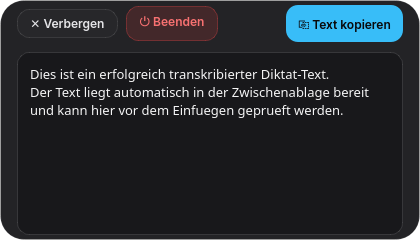

Schlankes, schwebendes Desktop-Diktier-Utility für Linux & Windows
⚡ Schnellstart & Bedienung
Mit whisper-pill diktieren Sie gesprochenen Text direkt in jede beliebige Anwendung – ohne Cloud, ohne Latenz und 100 % lokal.
Globaler Shortcut zum Ein- und Ausblenden:
Unter Linux: Super + Strg + P
Unter Windows: Win + Strg + P
1. Aufnahme starten
Drücken Sie den globalen Shortcut oder klicken Sie auf der Pill auf ● Aufnehmen.
2. Text sprechen
Sprechen Sie normal ins Mikrofon. Die animierte Wellenform visualisiert Ihre Stimme in Echtzeit.
3. Aufnahme stoppen
Drücken Sie erneut den Shortcut oder klicken Sie auf ■ Stop.
4. Text einfügen
Der Text wird blitzschnell lokal auf Ihrer CPU transkribiert und liegt sofort in Ihrer Zwischenablage. Fügen Sie ihn einfach mit Strg + V in Ihr Dokument, Ihren Chat oder Ihr Terminal ein!
🖼 Die 4 Zustände der Pill
Die Kapsel bleibt in allen Zuständen stets exakt 420 Pixel breit und springt nicht auf Ihrem Bildschirm.
1. Ruhezustand (Idle)
Die Kapsel wartet am oberen Bildschirmrand auf Ihren Einsatz. 0 % CPU-Last im Standby.
2. Aufnahme (Recording)
Mikrofon ist aktiv. Zeigt den Live-Audiopegel und die verstrichene Aufnahmezeit an.
3. Fertig & Kopiert (Ready)
Transkription abgeschlossen! Der fertige Text befindet sich bereits in der Zwischenablage.
4. Ausgeklappt (Review & Edit)

Über [⤢ Details / Edit] öffnet sich der Editor zur Textprüfung oder manuellen Bearbeitung.
⌨ Tastenkombinationen
Aktion
Linux (KDE / Wayland)
Windows
Pill ein- / ausblenden
Super + Strg + P
Win + Strg + P
Text einfügen
Strg + V
Strg + V
Pill verschieben
Linke Maustaste auf die Kapsel gedrückt halten und ziehen (Drag & Drop)
Kontextmenü öffnen
Rechtsklick auf die Kapsel oder Rechtsklick auf das Tray-Icon in der Taskleiste
⚙ Hintergrundbetrieb & Beenden
whisper-pill läuft unauffällig im Hintergrund und minimiert sich in den System-Tray (Taskleiste).
Anwendung beenden:
Rechtsklick auf die Pill: Wählen Sie ⏻ whisper-pill beenden.
System-Tray-Icon: Rechtsklick auf das Mikrofonsymbol in der Taskleiste → ✕ whisper-pill beenden.
Im Editor (Ausgeklappt): Klicken Sie auf den roten Button ⏻ Beenden.
Im Terminal / VS Code: Drücken Sie einfach Strg + C.
🔒 Lokaler Datenschutz
✔ 100 % LokalZero-Cloud
Ihre Audiodaten verlassen niemals Ihren Computer. Die Spracherkennung läuft über ein optimiertes CTranslate2-Modell direkt auf Ihrem Hauptprozessor (CPU). Es werden keinerlei Telemetriedaten oder Netzwerkverbindungen aufgebaut.